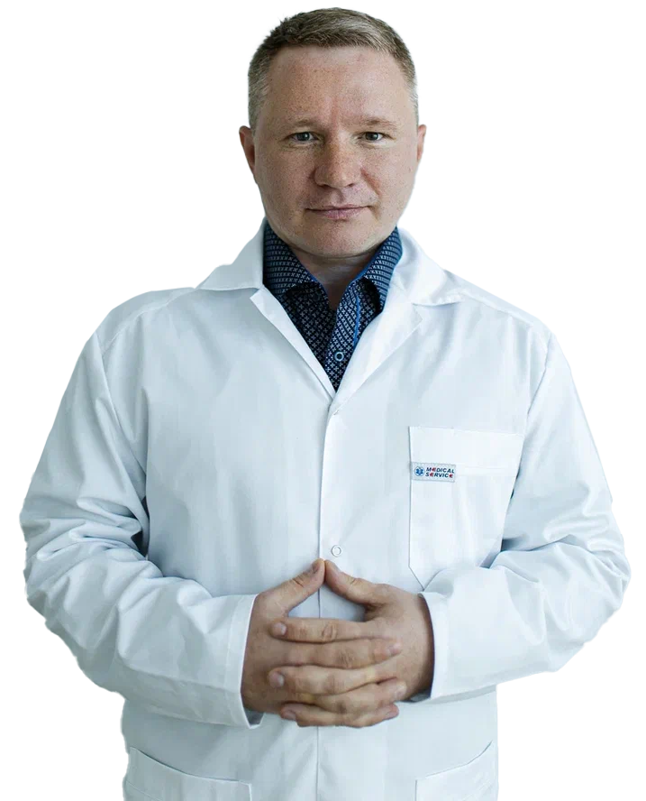

Наркологический центр в Cанкт-Петербруге при любом виде и стаже зависимости
Лечение зависимости в России проводится в лицензированных клиниках, где все процедуры, препараты и этапы терапии гарантируют безопасность и быстрое возвращение к трезвой жизни. Платный наркологический центр – место, в котором можно получить помощь анонимно и круглосуточно, при любой стадии и виде аддикции.

Сравнение методов химического кодирования от алкоголизма
Химическая защита
(горячий укол)
3500 ₽
Вводится внутривенно
Дешевле других методов
После укола возможен жар, озноб
Эспераль гель
3700 ₽
Внутримышечная инъекция под лопатку
Эффективно
Современный препарат
Процедура легко переносится
Дороже метода хим.защиты
Химическая защита
4700 ₽
Капсула с препаратом подшивается под кожу
Эффективно
Современный препарат
Хирургическая операция
Остается рубец на коже
*Цены кодирования на 1 год по прайсу Клиники профессора Ф.Ф, Преображенского
Наши гарантии
Гарантируем 100% результат после лечения!
Используем только качественные и проверенные препараты
Никто не узнает кто мы и зачем приходили
Проведем диагностику для исключения нежелательной реакции
Часто задаваемые вопросы
Какие есть противопоказания при кодировке?
Продолжительность наркологического курса зависит от степени тяжести состояния.
Какие есть противопоказания при кодировке?
Продолжительность наркологического курса зависит от степени тяжести состояния и динамики восстановления. На ранней стадии зависимости стойкой ремиссии можно достичь через 3-4 месяца с момента обращения к врачу. Наркоманы, как правило, лечатся дольше, так как как наркотики быстрее и выражения поражают психическую систему: им требуется около года. Дольше всех в наркологическом реабилитационном центре лечится солевые наркоманы: их курс может достигать 1,5-2 лет.
Какие есть противопоказания при кодировке?
Продолжительность наркологического курса зависит от степени тяжести состояния и динамики восстановления. На ранней стадии зависимости стойкой ремиссии можно достичь через 3-4 месяца с момента обращения к врачу. Наркоманы, как правило, лечатся дольше, так как как наркотики быстрее и выражения поражают психическую систему: им требуется около года.
Какие есть противопоказания при кодировке?
Продолжительность наркологического курса зависит от степени тяжести состояния и динамики восстановления. На ранней стадии зависимости стойкой ремиссии можно достичь через 3-4 месяца с момента обращения к врачу. Наркоманы, как правило, лечатся дольше, так как как наркотики быстрее и выражения поражают психическую систему: им требуется около года. Дольше всех в наркологическом реабилитационном центре лечится солевые наркоманы: их курс может достигать 1,5-2 лет.
Кому показан?
Признаки болезни
Чем раньше была начата терапия, тем быстрее будет достигнута стабильная ремиссия или полное выздоровление. Алкоголики обычно обращаются к наркологу за помощью на II или III стадии зависимости, когда лечение от алкоголя занимает больше времени. Но даже на этом этапе можно добиться выздоровления, восстановления здоровья, психологического состояния и социальных навыков.
Признаки болезни
Чем раньше была начата терапия, тем быстрее будет достигнута стабильная ремиссия или полное выздоровление. Алкоголики обычно обращаются к наркологу за помощью на II или III стадии зависимости, когда лечение от алкоголя занимает больше времени. Но даже на этом этапе можно добиться выздоровления, восстановления здоровья, психологического состояния и социальных навыков.
Признаки болезни
Чем раньше была начата терапия, тем быстрее будет достигнута стабильная ремиссия или полное выздоровление. Алкоголики обычно обращаются к наркологу за помощью на II или III стадии зависимости, когда лечение от алкоголя занимает больше времени. Но даже на этом этапе можно добиться выздоровления, восстановления здоровья, психологического состояния и социальных навыков.
Понять, что без наркологической помощи отказаться от зависимости не удастся, можно по следующим признакам:
запой любой продолжительности
синдром отмены (абстиненция)
физические и психические осложнения
отравление этиловым спиртом
Нередко зависимый неосознанно маскирует проблему, утверждая, что употребляет алкоголь по своему желанию, так как он:
имеет приятный вкус
помогает заснуть или расслабиться
улучшает самочувствие, предупреждает простуду, снижает давление
способствует неформальному общению
Мотивы приема алкоголя бывают разными, и от них обязательно нужно избавиться, чтобы осознать проблему и начать лечение алкоголизма. Если человек не может сделать это самостоятельно, он может обратиться к психологу, который приедет на дом и проведет мотивационную беседу – интервенцию.
Получите консультацию специалиста бесплатно
Не нашли категорию или остальные вопросы, оставьте заявку и мы поможем вам